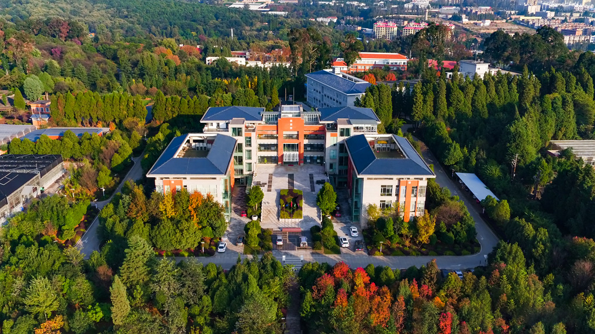

Introduction
The Plant Genomics and Computational Biology Research Group, set up by Dr. Andan Zhu in 2017, aims to address the evolutionary processes and molecular mechanisms underlying the diversity of plant traits. Specifically, we integrate computational and functional genomics methods to explore the mechanisms of evolution of mitochondrial complexity, and the formation of important and/or unique horticultural traits in Fragaria (strawberry) and orchid plants.
Read More


{kind=link}
{kind=link}
{kind=link}
{kind=link}
Our Latest Publications
- Haplotype-resolved genomes of wild octoploid progenitors...
- Temporal regulation of metabolome and proteome in photo...
- Episodic and GC-biased bursts of intragenomic and inter...
- Evolution of self-compatibility by a mutant Sm-RNase in ...
- Extensive Shifts from Cis- to Trans-splicing of Gymnosp...
- Complete loss of RNA editing from the plastid genome an...
- The terpene limonene induced the green mold of citrus f...
- Pre-KIB selected papers
Haplotype-resolved genomes of wild octoploid progenitors illuminate genomic diversifications from wild relatives to cultivated strawberry
Jin X, Du H, Zhu C, Wan H, Liu F, Ruan J, Mower JP,, Zhu A, Haplotype-resolved genomes of wild octoploid progenitors illuminate genomic diversifications from wild relatives to cultivated strawberry. 2023, Nature Plans in press
The article links: https://doi.org/10.1038/s41477-023-01473-2